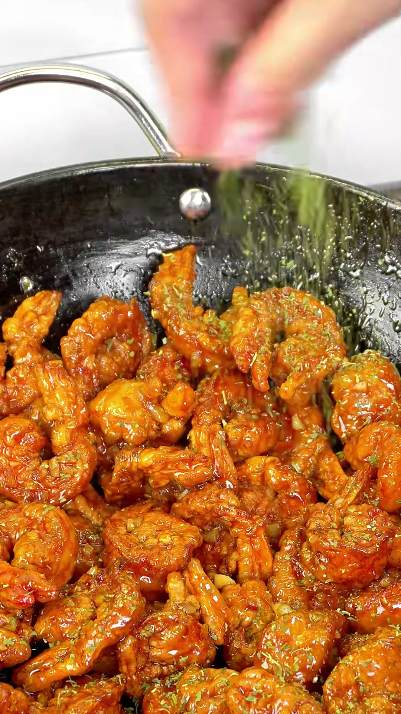
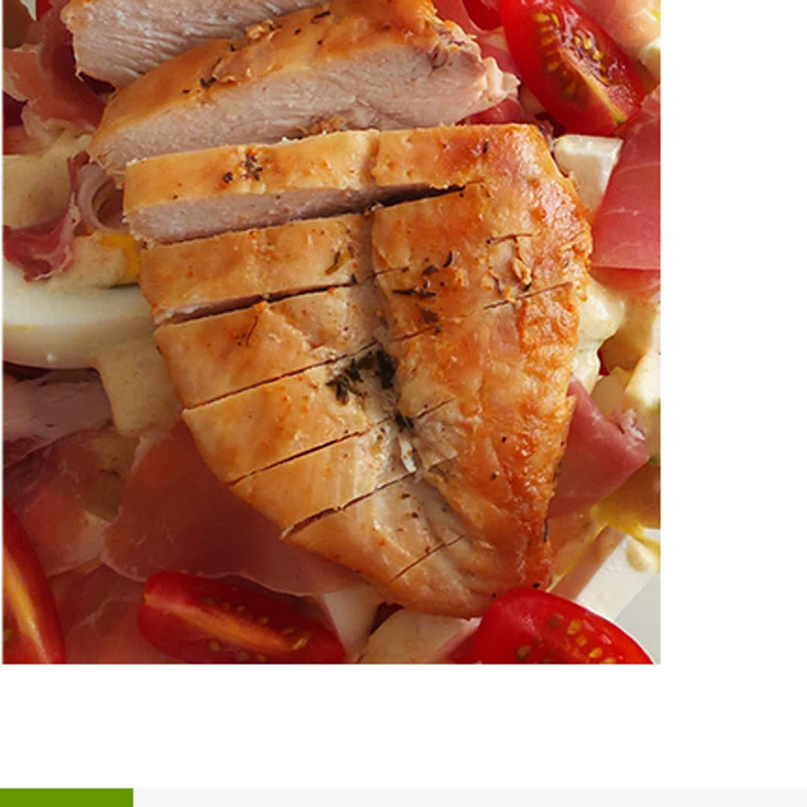

JIPBAB SHOP
FOOD ARCHIVE
영상에서 본 바로 그 음식
오늘은 뭘
맛있게 먹을까?
짧은 영상에서 지나간 조리 순서와
필요한 재료를 한곳에 모았어요.
영상에 표시된 숫자만 입력하면 바로 찾을 수 있어요.

2
5분 감바스
간단한 한 끼 · 따라 하기 쉬운 조리
모든 음식
최신순 · 3개2
오늘의 한 끼5분 감바스
영상 속 조리법과 재료 보기
1
제품 조리법 확인바삭한 통등심 돈까스
돈까스, 배달 기다려 눅눅하게 먹지 마세요

퍽퍽함 사라지는 촉촉 닭가슴살
굽기 전 딱 한 단계로 겉은 노릇, 속은 촉촉하게.
해당 번호를 찾지 못했어요.